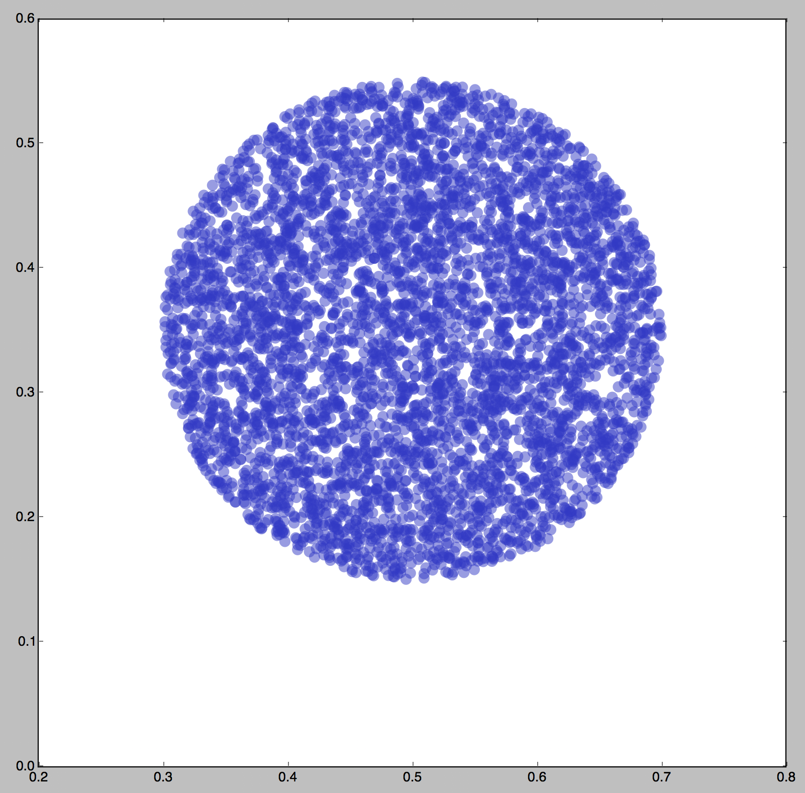
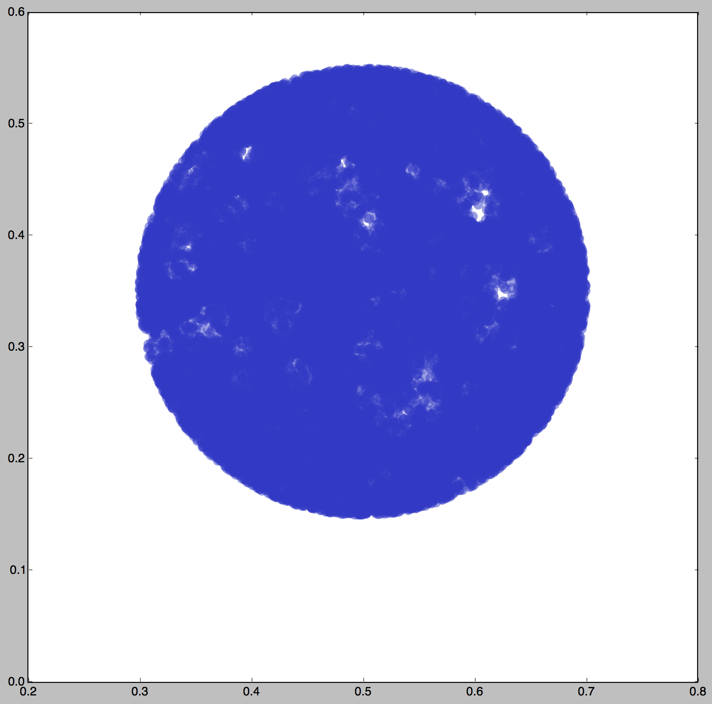

|

1. Rejection Sampled Snowball, 5000 Particles
|

2. Rejection Sampled Snowball, 30000 Particles
|

3. Rejection Sampled Snowball with embedded circular voids, 30000 Particles
|

4. Rejection Sampled Snowball with embedded elliptical voids, 30000 Particles
|